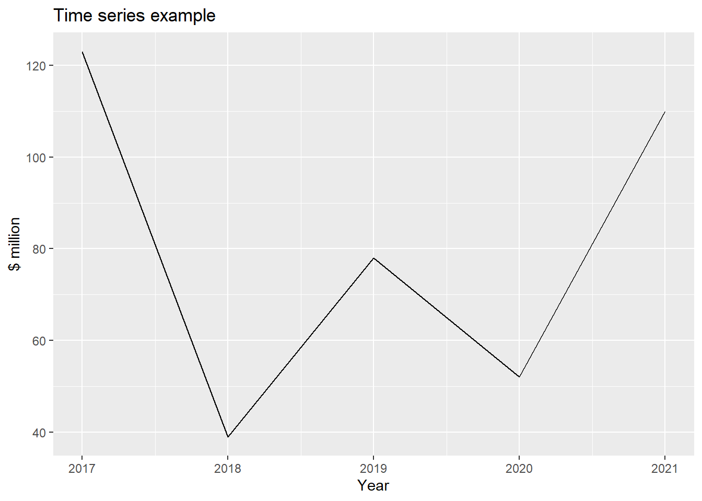
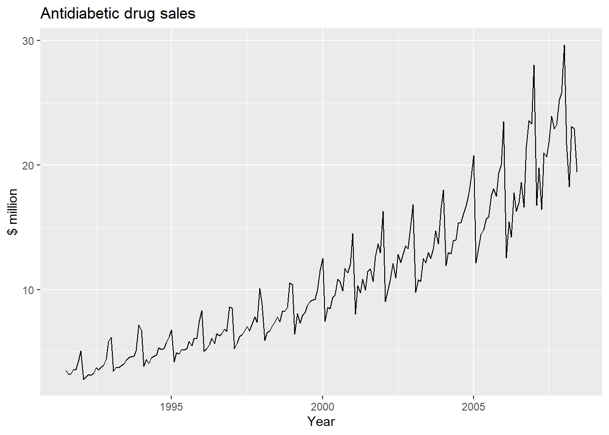
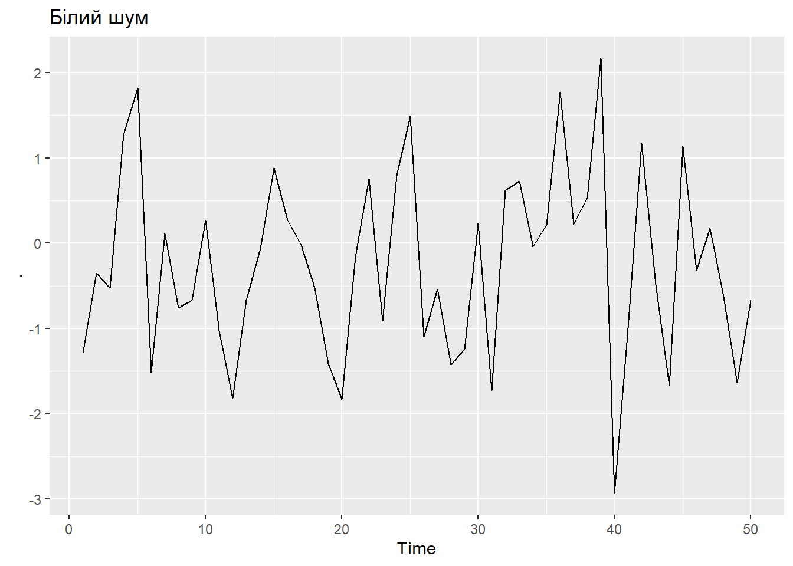
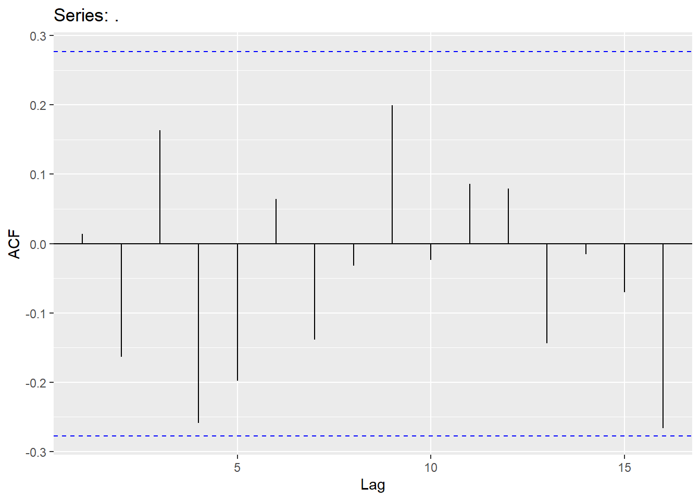
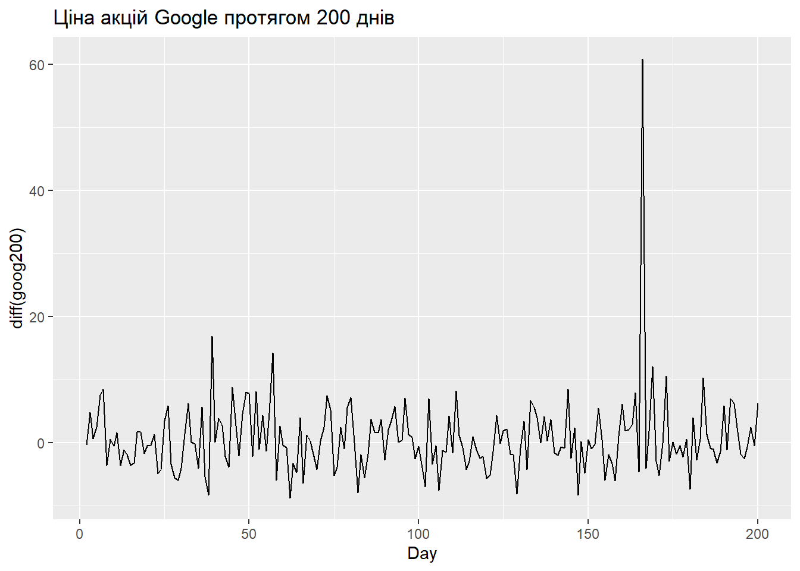
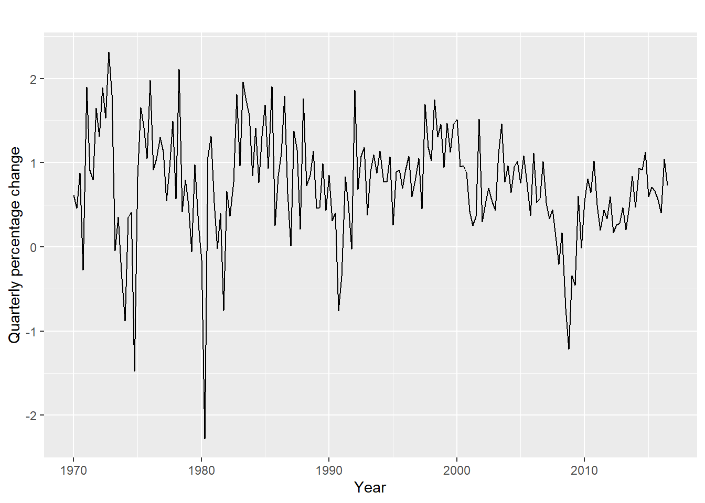
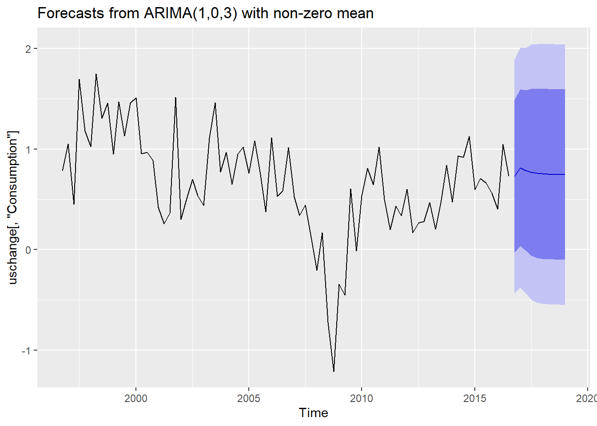

Розділ 9 Лабораторна робота № 8. Побудова ARIMA-моделі часового ряду і прогнозування на її основі (short version)
Мета: Подубова ARIMA-моделей та прогнозування на їх основі засобами мови програмування R.
9.1 Що ви будете вміти?
- виконувати візуалізацію часових рядів (ЧР).
- перевіряти ЧР на стаціонарність і зводити його до стаціонаного у разі його не стаціонарності.
- виконувати структурну і параметричну ідентифікацію ARIMA-моделі ЧР.
- будувати короткострокові прогнози на основі побудованої ARIMA-моделі.
При підготовці використано (Statsoft 2021), (H. 2003), (Box J. 1974), (Hyndman 2018), (Hyndman 2021).
9.2 ts-об’єкт
Для роботи з ЧР будемо використовувати функцію ts(), яка створює об’єкт типу ЧР з вектора чи дата фрейма.
Деталі див. тут
ts_examples <- ts(c(123,39,78,52,110), start=2017)
autoplot(ts_examples) +
ggtitle("Time series example") +
ylab("$ million") +
xlab("Year")
Далі будемо працювати виключно з ЧР у даному форматі.
9.3 Візуалізація ЧР
Для візуалізації ЧР будемо використовувати генерік-функцію autoplot(), яка, згідно з принципом поліморфизму, буде виконувати візуалізацію об’єкта, даного їй в якості аргументу, в залежності від його типу. Таким чином, отримавши на вхід об’єкт класу ts, його буде розпізнано як ЧР і відповідним чином візуалізовано.
Для візуалізації будемо використовувати набір даних melsyd, що входить до складу пакету fpp2 (Hyndman 2018).
Нижче наведено приклади візуалізації часових рядів з цього датасета.
data(melsyd)
autoplot(melsyd[,"Economy.Class"]) +
ggtitle("Economy class passengers: Melbourne-Sydney") +
xlab("Year") +
ylab("Thousands")
autoplot(a10) +
ggtitle("Antidiabetic drug sales") +
ylab("$ million") +
xlab("Year")
# Приклад з третьої редакції
# melsyd_economy <- ansett %>%
# filter(Airports == "MEL-SYD", Class == "Economy") %>%
# mutate(Passengers = Passengers/1000)
#
# autoplot(melsyd_economy, Passengers) +
# labs(title = "Ansett airlines economy class",
# subtitle = "Melbourne-Sydney",
# y = "Passengers ('000)")При аналізі ЧР особливо важливим є розуміння абстракції “білого шуму” і його характеристик.
set.seed(30)
y <- ts(rnorm(50))
y %>%
autoplot() + ggtitle("Білий шум")
Оцінка АКФ білого шуму має вигляд.
y %>%
ggAcf()
y %>%
ggPacf()
Видно, що оцінки АКФ та ЧАКФ білого шуму не мають жодного значимого лага.
9.4 Стаціонарність і диференціювання
Нижче наведені приклади різних типів нестацінарностей у ЧР.

Which of these series are stationary? (a) Google stock price for 200 consecutive days; (b) Daily change in the Google stock price for 200 consecutive days; (c) Annual number of strikes in the US; (d) Monthly sales of new one-family houses sold in the US; (e) Annual price of a dozen eggs in the US (constant dollars); (f) Monthly total of pigs slaughtered in Victoria, Australia; (g) Annual total of lynx trapped in the McKenzie River district of north-west Canada; (h) Monthly Australian beer production; (i) Monthly Australian electricity production. (Hyndman 2018)
Нестаціонарності у вигляді тренду можна позбутися шляхом диференціювання ЧР.
goog200 %>%
autoplot() +
ggtitle("Ціна акцій Google протягом 200 днів") +
ylab("goog200") +
xlab("Day")
Оцінка АКФ має вигляд.
goog200 %>%
ggAcf()
Оцінка АКФ має вигляд характерний для нестаціонарності у вигляді тренду, який легко усувається шляхом диференціювання.
goog200 %>%
diff() %>%
autoplot()+
ggtitle("Ціна акцій Google протягом 200 днів") +
ylab("diff(goog200)") +
xlab("Day")
Тепер оцінка АКФ має вигляд оцінки АКФ “білого шуму,” що підтверджується результатами теста Бокса-Люнга.
goog200 %>%
diff() %>%
ggAcf()
З надійністю 95% можна сказати, що автокреляція відстуня, так як Q-статистика має р-значення = 0,355 (для h=10). Це свідчить про те, що щоденна зміна ціни акцій Google - це, по суті, випадкова величина, яка не корелює із значеннями у попередні дні.
goog200 %>%
diff() %>%
Box.test(lag=10, type="Ljung-Box")##
## Box-Ljung test
##
## data: .
## X-squared = 11.031, df = 10, p-value = 0.35519.5 Приклад побудови не сезонної ARIMA-моделі
У якості прикладу (Hyndman 2018) розглянемо динаміку щоквартальних процентних змін у споживчих витратах США. Хоча це щоквартальна серія, сезонний зразок, схоже, не існує, тому ми відштовхуватимемося від несезонної моделі ARIMA.
autoplot(uschange[,"Consumption"]) +
xlab("Year") + ylab("Quarterly percentage change")
Нижче наведено код R, який дозволяє автоматично вибрати модель.
fit <- auto.arima(uschange[,"Consumption"], seasonal=FALSE)Маємо наступну оцінку моделі: \[y_t = c + 0.589 y_{t-1} - 0.353 \epsilon_{t-1} + 0.0846 \epsilon_{t-2} + 0.174 \epsilon_{t-3} + \epsilon_t, \]
де \(c = 0.745 × (1 − 0.589) = 0.307\), де \(\epsilon_t\) ’ білий шум зі стандартним відхиленням \(\sigma = 0.592 = \sqrt{0.350}\).
Модель прогнозу має наступний вигляд.
fit %>%
forecast(h=10) %>%
autoplot(include=80)
Дану модель можна побудувати “в ручному” режимі, задавши явно специфікацію моделі.
(fit2 <- Arima(uschange[,"Consumption"], order=c(1,0,3)))## Series: uschange[, "Consumption"]
## ARIMA(1,0,3) with non-zero mean
##
## Coefficients:
## ar1 ma1 ma2 ma3 mean
## 0.5885 -0.3528 0.0846 0.1739 0.7454
## s.e. 0.1541 0.1658 0.0818 0.0843 0.0930
##
## sigma^2 = 0.3499: log likelihood = -164.81
## AIC=341.61 AICc=342.08 BIC=361(fit3 <- Arima(uschange[,"Consumption"], order=c(3,0,3)))## Series: uschange[, "Consumption"]
## ARIMA(3,0,3) with non-zero mean
##
## Coefficients:
## ar1 ar2 ar3 ma1 ma2 ma3 mean
## 0.5145 0.4530 -0.3675 -0.2769 -0.3564 0.4576 0.7462
## s.e. 0.3272 0.2457 0.2533 0.3111 0.2241 0.1678 0.0871
##
## sigma^2 = 0.3514: log likelihood = -164.2
## AIC=344.4 AICc=345.21 BIC=370.25(fit4 <- Arima(uschange[,"Consumption"], order=c(3,0,0)))## Series: uschange[, "Consumption"]
## ARIMA(3,0,0) with non-zero mean
##
## Coefficients:
## ar1 ar2 ar3 mean
## 0.2274 0.1604 0.2027 0.7449
## s.e. 0.0713 0.0723 0.0712 0.1029
##
## sigma^2 = 0.3494: log likelihood = -165.17
## AIC=340.34 AICc=340.67 BIC=356.59.6 Завдання на лабораторну роботу
- Для прикладу, розглянутого вище, знайти оцінки АКФ і ЧАКФ. Запропонувати і дослідити альтернативні моделі і обґрунтувати специфікацію моделі, знайдену автоматичною процедурою.
- Отримати варіант завдання у викладача з даними ЧР і виконати структурну і параметричну ідентифікацію ARIMA-моделі, дослідити альтернативні моделі, знайти оцінку короткострокового прогнозу на величину \(h\) наступних моментів ряду. Візуалізувати прогноз.
- Створити звіт у вигляді .Rmd-документа у форматі RNotebook.